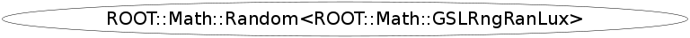

Function Members (Methods)
public:
| ~Random<ROOT::Math::GSLRngRanLux>() | |
| unsigned int | Binomial(unsigned int ntot, double prob) |
| double | BreitWigner(double mean = 0., double gamma = 1) |
| double | ChiSquare(double nu) |
| void | Circle(double& x, double& y, double r = 1) |
| unsigned int | EngineSize() const |
| double | Exp(double tau) |
| double | FDist(double nu1, double nu2) |
| double | Gamma(double a, double b) |
| double | Gaus(double mean = 0, double sigma = 1) |
| double | GausBM(double mean = 0, double sigma = 1) |
| double | GausR(double mean = 0, double sigma = 1) |
| void | Gaussian2D(double sigmaX, double sigmaY, double rho, double& x, double& y) |
| double | GaussianTail(double a, double sigma = 1) |
| double | Landau(double mean = 0, double sigma = 1) |
| double | LogNormal(double zeta, double sigma) |
| vector<unsigned int> | Multinomial(unsigned int ntot, const vector<double>& p) |
| unsigned int | NegativeBinomial(double n, double prob) |
| ROOT::Math::Random<ROOT::Math::GSLRngRanLux>& | operator=(const ROOT::Math::Random<ROOT::Math::GSLRngRanLux>&) |
| unsigned int | Poisson(double mu) |
| ROOT::Math::Random<ROOT::Math::GSLRngRanLux> | Random<ROOT::Math::GSLRngRanLux>() |
| ROOT::Math::Random<ROOT::Math::GSLRngRanLux> | Random<ROOT::Math::GSLRngRanLux>(unsigned int seed) |
| ROOT::Math::Random<ROOT::Math::GSLRngRanLux> | Random<ROOT::Math::GSLRngRanLux>(const ROOT::Math::GSLRngRanLux& e) |
| ROOT::Math::Random<ROOT::Math::GSLRngRanLux> | Random<ROOT::Math::GSLRngRanLux>(const ROOT::Math::Random<ROOT::Math::GSLRngRanLux>&) |
| double | Rndm() |
| void | RndmArray(int n, double* array) |
| void | SetSeed(unsigned int seed) |
| void | Sphere(double& x, double& y, double& z, double r = 1) |
| double | tDist(double nu) |
| string | Type() const |
| double | Uniform(double x = 1.0) |
Data Members
private:
| ROOT::Math::GSLRngRanLux | fEngine |
Class Charts
{kind=link}
{kind=link}
{kind=link}
{kind=link}

Function documentation
double Uniform(double x = 1.0)
Generate random numbers between ]0,1]
0 is excluded and 1 is included
double Rndm()
Generate random numbers between ]0,1]
0 is excluded and 1 is included
Function to preserve ROOT Trandom compatibility
void RndmArray(int n, double* array)
Generate an array of random numbers between ]0,1]
0 is excluded and 1 is included
Function to preserve ROOT Trandom compatibility
double Gaus(double mean = 0, double sigma = 1)
void Gaussian2D(double sigmaX, double sigmaY, double rho, double& x, double& y)
Bivariate Gaussian distribution with correlation
void Sphere(double& x, double& y, double& z, double r = 1)
generate random numbers in a 3D sphere of radious 1
unsigned int NegativeBinomial(double n, double prob)
std::vector<unsigned int> Multinomial(unsigned int ntot, const vector<double>& p)
Multinomial distribution